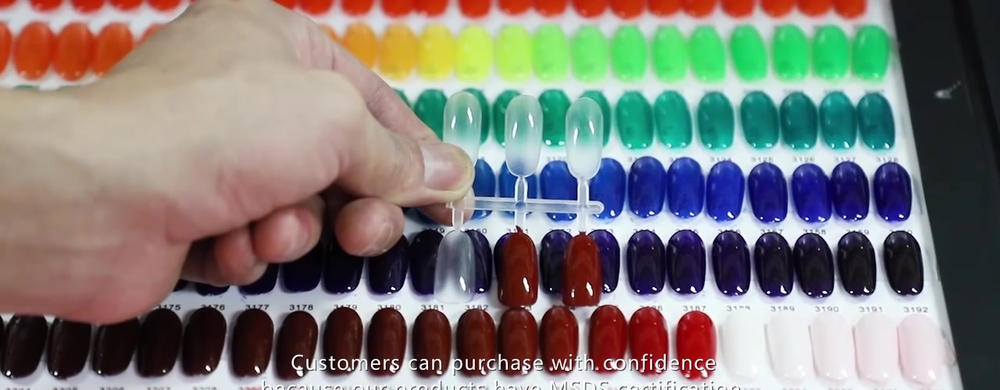
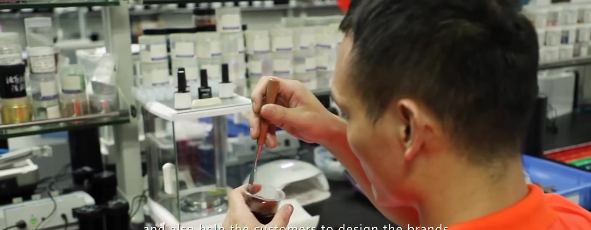

Before you open the parcel
Photograph the shipping carton, seals and any dents, wet areas or broken components. Record arrival date, sample ID, shade, formula revision and batch reference if supplied. Keep the packaging until transport-related issues are resolved.
Follow the supplier's handling instructions. Do not open a leaking or damaged container merely to complete a checklist. Ask for safe handling and replacement instructions.
{kind=link}

Sample review table
| Item | How to review | Evidence to record |
|---|---|---|
| Color and finish | Compare with the agreed physical reference under consistent lighting; for gel, use the specified application and curing conditions | Reference ID, coat count, lighting and images |
| Viscosity and leveling | Follow an agreed method at a recorded temperature; assess controlled application and leveling | Temperature, method, observations and agreed limits |
| Brush | Check shape, bristle consistency, shedding, pickup and access inside the bottle | Brush version and application notes |
| Bottle, cap and seal | Inspect damage, closure fit, leakage and product around the neck | Component IDs and defect photos |
| Label and decoration | Compare logo, shade code, text, alignment and legibility with approved artwork | Artwork revision and marked-up differences |
| Box and inserts | Check fit, protection, print and correct product pairing | Box revision and fit photos |
| Shipping condition | Compare exterior damage with internal damage or leaks | Parcel photos and affected quantity |
Evaluate product performance under defined conditions
Use the instructions and equipment specified for the product system. For a light-cured gel, record the lamp model, exposure instructions, coat thickness or application method, and compatible base/top products. A surface that feels hard is not, by itself, proof of adequate cure or product safety; obtain appropriate validation from the supplier or specialist.
Do not use smell or skin exposure as a safety test. Consumer acceptance testing and technical safety assessment serve different purposes. Record any performance concern and request investigation before approving that feature.
{kind=link}

Choose a clear decision
- Approved: The identified sample meets the agreed scope. Attach the final specification.
- Revision required: List each deviation and request a new identified sample.
- Hold: Key information, testing or artwork is missing. State what evidence is needed to continue.
Avoid a vague “looks good” approval. If only the shade is approved, explicitly state that packaging and formula documentation remain open. Retain a reference sample using agreed storage conditions.
Copyable approval record
Project / Sample ID / Formula revision / Shade / Packaging revision / Artwork revision / Date received / Review conditions / Findings / Photos / Open issues / Decision / Approver / Approval date.
Common questions
Does approving a sample approve every production batch? No. The sample defines a reference; production still needs the agreed batch checks and release process.
Can photographs confirm the shade? Use them to document findings, but use an agreed physical standard when color consistency matters.
What happens after a revision? Identify the replacement sample and state which previous approvals remain valid.